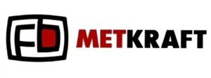

Trade Mark Journal No.2026/009 27 February 2026
WO0000001901548 (7,8)
Office of origin: Viet Nam

The mark consists of the wording "METKRAFT" in stylized uppercase letters, with "MET" in red and "KRAFT" in black. "METKRAFT" is a coined term with no specific meaning. To the left of the wording "METKRAFT" is a stylized rectangle with a white interior and a black border. Inside this rectangle, on the right side, is a smaller rectangle with a red interior and a black border. On the left side is a design element consisting of a straight line with 2 parallel lines appearing horizontally across the top and middle of the straight line.
The mark contains the colours red, black and white.
Red: the wording "MET" and the interior of the smaller rectangle inside the black-framed design; Black: the wording "KRAFT" and the border lines of the designs; White: the background and the interior inside the black-framed design.
- Class 7
- Agricultural implements, other than hand-operated; bearings (parts of machines); chaff cutter blades; blades (parts of machines); knives (parts of machines); knives for moving machines; ploughshares; plunger pistons; saw blades (parts of machines); sharpening wheels (parts of machines).
- Class 8
- Blades for planes; cutters; knives; razor blades; scissors; shear blades; sharpening stones.
CONG TY TNHH METKRAFT (METKRAFT LIMITED COMPANY)
Representative: VISION & ASSOCIATES, Unit 308-310, 3rd Floor, Hanoi Towers, , 49 Hai Ba Trung Street, Cua Nam, Hanoi, VIET NAM